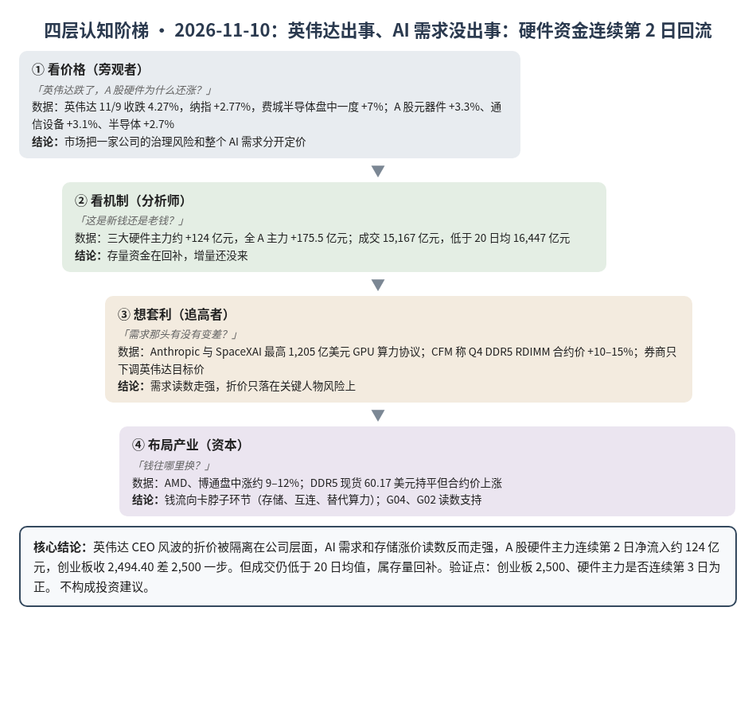
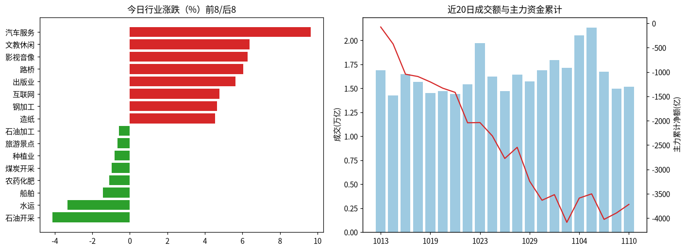
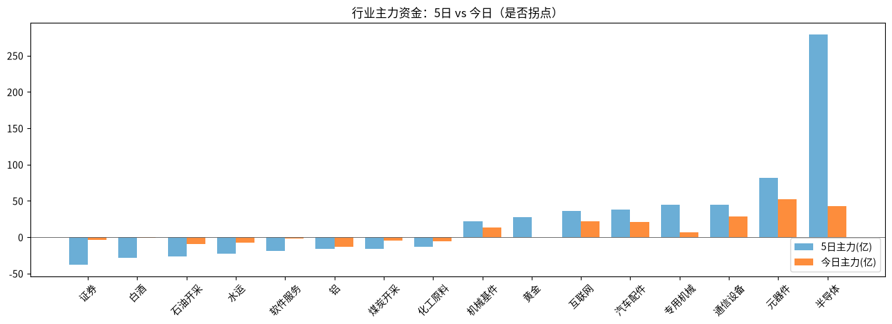

A股投研日报 · 2026-11-10（四层认知版）
- 主线
- 市场把"英伟达出事"和"AI 需求"分开定价，硬件资金连续第 2 日回流
- 最重要变化点
- 隔夜英伟达 −4.27%，费城半导体盘中一度 +7%；A 股三大硬件主力约 +124 亿，创业板 +1.46% 收 2,494.40，差 2,500 一步
- 机制含义
- 折价只落在一家公司的治理上，算力和存储的需求读数反而走强（DDR5 合约价 +10–15%），资金在 AI 链内部换仓
- 下一个观察点
- 11/11 创业板收盘能否 ≥2,500，且三大硬件主力连续第 3 日为正
本报告为基于公开数据的研究分析，不构成投资建议。
今日市场概况
数据管道速览（Tushare 收盘数据，规则生成，正文判断见下文）
- 指数：上证指数 +0.08% 收 3,663.72，创业板指 +1.46% 收 2,494.40；深证成指 +0.86%、科创50 +0.64%、上证50 -0.58%、沪深300 +0.07%、中证500 +0.91%、中证1000 +1.22%（Tushare）。
- 量能与宽度：成交 15,167 亿元（20 日均 16,447 亿元）；上涨 4,273 家 / 下跌 1,149 家，上涨占比 76.7%，个股中位数 +1.3%。
- 主力资金：全 A 主力 +175.5 亿元，连续第 2 日净流入。
- 行业：主力流入居前 元器件（+52.3 亿）、半导体（+42.8 亿）、通信设备（+28.6 亿）；流出居前 铝（-13.1 亿）、石油开采（-9.7 亿）、水运（-7.2 亿）。
- 龙虎榜 / 北向：机构专用席位合计 +6.15 亿元；沪深股通成交前五 中际旭创、宁德时代、新易盛、生益科技、药明康德（成交额≠净买入）。
变化点
方法：四层认知阶梯 + 历史周期律。数据 Tushare（见附录）。不构成投资建议。
一、世界观定位
阶段不变，回退条件不变。变化在"关键人物风险"被市场隔离：英伟达跌、同行涨。世界指标今日更新超时未完成（Tushare 报 IP 数超限），五盏灯沿用 11/04 读数（3 黄 2 红：估值、中国信用）。
二、变化一（主变化）：英伟达折价被隔离，AI 需求读数走强
- 看价格：英伟达 11/9 收跌 4.27% 报 178.67 美元（源），纳指 +2.77%，费城半导体盘中一度 +7.01%，AMD、博通涨约 9–12%（源、源）。A 股元器件 +3.3%、通信设备 +3.1%、半导体 +2.7%。
- 看机制：三大硬件主力 +52.3、+42.8、+28.6 亿元，全 A 主力 +175.5 亿元，上涨占比 76.7%；但成交 15,167 亿元仍低于 20 日均 16,447 亿元，属存量回补。
- 想套利：需求端新读数是硬的——Anthropic 披露与 SpaceXAI 最高 1,205 亿美元的英伟达 GPU 算力协议（源）；CFM 称 Q4 服务器 DDR5 RDIMM 合约价涨 10–15%（源）。券商下调的是英伟达目标价（花旗 285、富国 300），理由是关键人物风险，不是需求（源）。
- 布局产业：推断钱从"单一龙头"流向"卡脖子环节"（存储、互连、替代算力），对 A 股是元器件与存储链受益多于整机。
判断：主要矛盾从"龙头治理折价会不会拖垮 AI 链"转为"折价能否止于一家公司"。今天答案偏"能"，但缩量下还没有新钱。
三、变化二：存储涨价从现货转到合约
DDR5 16Gb 现货 60.17 美元，连续 3 日持平（世界指标自采）；合约价却涨 10–15%，长协外价更高。大疆据传 11/18 起涨价最高 13%、称与存储成本有关，客服称未获通知（源）。
判断：原厂把产能优先给付高价的人，G02 读数支持；现货不涨说明渠道端还没抢货。
四、上一交易日验证点回顾（11/9 → 11/10）
| 验证点 | 结果 |
|---|---|
| 创业板收盘 ≥2,500 | 未命中：收 2,494.40 |
| 英伟达收盘跌幅 ≤5% | 命中：−4.27%；硬件主力未转负 |
| 本周美元指数跌破 101 | 待验证：11/9 收 101.657 |
| DDR5 16Gb 跌破 59.66 美元 | 未命中：60.17 美元 |
五、供应链风险敞口（人工复核版）
脚本版见 risk_section_20261110.md。口径为 GB300/NVL72 当量柜年化系统价值；Δ$ 为事件类型假设模板，仅用于排序，非预测。脚本 2 条，误匹配 2 条（扩产新闻、M4.9 远距小震）。复核后有效断供 Δ$≈0，基线维持年化 EL 57.7 亿美元（10/21）。采集降级：巨潮公告匹配未恢复。
六、机会表（产业/环节层面，不构成投资建议）
| 环节 | 逻辑 | 证伪条件 |
|---|---|---|
| 存储/内存互连 | 合约价涨 10–15%，原厂优先高价客户 | DDR5 现货单周跌超 3% |
| 元器件/通信设备 | 硬件主力连续 2 日流入 | 硬件主力转为大额流出 |
中长期展望（3–12 个月与 2027）
3–12 个月：估值灯仍红，AI 硬件在去杠杆后段；英伟达风波若止于治理层，G04 的需求扩张读数不受影响。
2027：P023（四大云 2027 资本开支 ≥8,500 亿美元，概率 0.55）仍是总闸门；瑞银称超大云明年资本开支 1.75 万亿美元（口径更宽，源）。
什么会改变展望：①英伟达管理层变动并推迟指引；②任一大云下修 2027 资本开支；③DDR5 现货单周跌超 3%。
七、明日/本周验证点（可证伪）
- 11/11 创业板收盘 ≥2,500。
- 11/11 三大硬件主力合计连续第 3 日为正。
- 本周美元指数收盘是否跌破 101。
- 本周 DDR5 16Gb 现货是否跌破 59.66 美元。

一句话总结：市场把英伟达出事和 AI 需求分开定价，硬件资金连续第 2 日回流。
本报告为基于公开数据的研究分析，不构成任何投资建议。
附录：市场数据（证据底稿）


| 收盘 | 今日% | 5日% | 20日% | MA20 | 成交(亿) | |
|---|---|---|---|---|---|---|
| 上证指数 | 3,663.72 | 0.08 | 1.54 | -3.61 | 3,679.62 | 6,739.52 |
| 深证成指 | 11,241.54 | 0.86 | 3.35 | -9.00 | 11,428.33 | 3,975.11 |
| 创业板指 | 2,494.40 | 1.46 | 4.30 | -15.68 | 2,599.80 | 1,654.00 |
| 科创50 | 1,265.02 | 0.64 | 9.88 | -11.36 | 1,283.99 | 660.16 |
| 上证50 | 2,772.96 | -0.58 | 0.17 | -1.23 | 2,767.69 | 995.04 |
| 沪深300 | 4,059.11 | 0.07 | 1.25 | -5.07 | 4,090.44 | 3,800.90 |
| 中证500 | 6,645.89 | 0.91 | 5.04 | -6.20 | 6,649.95 | 2,540.83 |
| 中证1000 | 6,579.36 | 1.22 | 5.76 | -6.32 | 6,564.85 | 3,127.49 |
行业资金热力（按5日主力净额排序，前8/后8）
| industry | 今日% | 5日% | 20日% | 今日主力(亿) | 5日主力(亿) | 资金连续天数 |
|---|---|---|---|---|---|---|
| 半导体 | 2.7 | 14.6 | 0.5 | 42.8 | 279.0 | 2.0 |
| 元器件 | 3.3 | 9.3 | -9.3 | 52.3 | 81.4 | 2.0 |
| 通信设备 | 3.1 | 5.3 | -25.0 | 28.6 | 44.9 | 2.0 |
| 专用机械 | 3.3 | 13.3 | 0.0 | 6.7 | 44.2 | 2.0 |
| 汽车配件 | 3.6 | 10.4 | 14.9 | 20.7 | 38.0 | 2.0 |
| 互联网 | 4.8 | 10.7 | 10.1 | 22.0 | 35.6 | 1.0 |
| 黄金 | 1.1 | 17.9 | -0.7 | -0.2 | 27.1 | -1.0 |
| 机械基件 | 3.8 | 15.3 | 15.6 | 13.0 | 22.1 | 2.0 |
| 证券 | -0.0 | -1.2 | -3.5 | -3.4 | -37.8 | -6.0 |
| 白酒 | 0.4 | -1.3 | 13.2 | -1.1 | -28.6 | -5.0 |
| 石油开采 | -4.1 | -10.5 | -4.3 | -9.7 | -26.7 | -2.0 |
| 水运 | -3.3 | -7.0 | -11.2 | -7.2 | -23.1 | -8.0 |
| 软件服务 | 3.3 | 8.7 | 8.0 | -1.6 | -19.4 | -3.0 |
| 铝 | -0.5 | 2.7 | -3.6 | -13.1 | -15.8 | -1.0 |
| 煤炭开采 | -1.0 | -1.9 | -7.4 | -5.0 | -15.8 | -1.0 |
| 化工原料 | 0.8 | 8.4 | -4.4 | -6.1 | -13.6 | -3.0 |
市场情绪时间序列（近10日）
| trade_date | 成交(亿) | 上涨占比% | 主力净额(亿) | 个股中位涨跌% |
|---|---|---|---|---|
| 20261028 | 16421.0 | 74.6 | 229.2 | 1.3 |
| 20261029 | 15707.1 | 14.0 | -694.9 | -2.6 |
| 20261030 | 16877.1 | 16.0 | -391.8 | -3.1 |
| 20261102 | 17951.9 | 84.0 | 114.9 | 2.0 |
| 20261103 | 17150.9 | 37.8 | -568.2 | -0.7 |
| 20261104 | 20518.9 | 83.8 | 497.2 | 1.9 |
| 20261105 | 21351.0 | 87.4 | 86.9 | 2.0 |
| 20261106 | 16716.0 | 13.6 | -524.0 | -1.9 |
| 20261109 | 14945.5 | 40.2 | 132.1 | -0.3 |
| 20261110 | 15167.5 | 76.7 | 175.5 | 1.3 |
今日上涨4273家/下跌1149家，涨幅≥9.8% 134家、跌幅≤-9.8% 1家¹。
龙虎榜侧写：机构专用席位合计 +6.15 亿；净买入居前 富瀚微(+1.41亿)、冰山冷热(+1.34亿)、九安医疗(+0.95亿)，净卖出居前 北化股份(-0.69亿)、贝特利(-0.54亿)、高争民爆(-0.52亿)。 沪深股通活跃股：成交前五为中际旭创、宁德时代、新易盛、生益科技、药明康德（成交额≠净买入）。
注：¹涨跌停为按±9.8%阈值近似（limit_list_d无权限）。²行业为Tushare stock_basic分类自行聚合（sw_daily/ths_daily/行业资金流接口无权限），成交加权、剔除N/C新股，成分≥8只。³主力=大单+特大单净额（moneyflow）。⁴2024年8月起北向每日净买入停止披露，moneyflow_hsgt/hsgt_top10数值为成交口径，不可解读为净流入。⁵新闻/公告接口无权限，改用新浪财经7x24公开快讯自动抓取+人工补充。
接口状态：trade_cal:OK；stock_basic:OK；index_daily:OK；moneyflow_hsgt:OK；hsgt_top10:OK；top_list:OK；top_inst:OK；index_dailybasic:OK；新浪7x24(公开):OK 2799条（11-09 14:38 起）